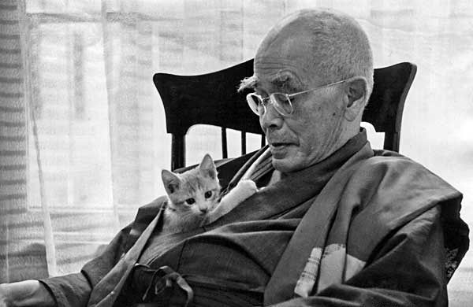
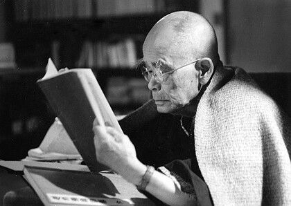

Who Was D. T. Suzuki?
D. T. Suzuki (1870–1966), born Suzuki Teitarō and later known as Daisetsu Teitarō Suzuki, was a Japanese Buddhist scholar, writer, translator, and influential interpreter of Zen Buddhism. He played a major role in presenting Zen and broader Buddhist ideas to readers in Europe and North America during the twentieth century, becoming one of the best-known interpreters of Japanese Buddhism outside Japan.
Suzuki combined extensive study with personal experience of Zen practice. During his early years in Tokyo and Kamakura, he trained as a lay practitioner at Engakuji under prominent Zen teachers, while also studying Western philosophy and literature. This encounter between Buddhist practice and modern intellectual currents strongly influenced the way he later interpreted Buddhism for international audiences. :contentReference[oaicite:1]{index=1}
Suzuki wrote extensively about Zen, Mahayana Buddhism, Pure Land Buddhism, enlightenment, meditation, consciousness, and the relationship between conceptual thought and direct experience. His translations, essays, books, and lectures became important sources for many Western readers interested in Zen and Japanese Buddhism at a time when reliable English-language material on these traditions was still relatively limited. :contentReference[oaicite:2]{index=2}
His importance, however, extended beyond the simple transmission of traditional Buddhist teachings. Suzuki actively interpreted Zen for a modern international audience, often using philosophical and psychological language that could communicate with contemporary Western readers. His writings therefore helped shape not only Western knowledge about Zen but also modern ideas about what Zen itself was understood to represent.
Suzuki was not simply a philosopher in the narrow academic sense. He worked across Buddhist studies, translation, comparative religion, philosophy, and cultural interpretation, and spent important periods teaching and lecturing in both Japan and the United States. His writings helped create an enormously influential modern presentation of Zen for an international audience, while also generating considerable scholarly debate about the historical accuracy, selectivity, and cultural assumptions involved in his representation of Zen in the modern West. :contentReference[oaicite:3]{index=3}
D. T. Suzuki: Quick Facts
- Full name — Daisetsu Teitarō Suzuki
- Born — 1870
- Died — 1966
- Nationality — Japanese
- Known for — Writing and translating on Zen Buddhism and Mahayana Buddhism
- Major subject — Zen Buddhism
- Important concept — Satori
- Major work — Essays in Zen Buddhism
- Field — Buddhist studies, comparative religion, philosophy, translation, and Zen interpretation
- Historical importance — One of the most influential twentieth-century interpreters of Zen Buddhism for Western audiences.
D. T. Suzuki's Early Life and Introduction to Zen

D. T. Suzuki was born in Kanazawa, Japan, in 1870, during the early years of the Meiji period. His intellectual development therefore took place at a time when Japan was rapidly transforming its political and educational institutions while engaging intensively with Western philosophy, science, religion, and scholarship. This encounter between Japanese traditions and modern international thought would remain an important background to Suzuki's later work.
As a young man, Suzuki studied in Tokyo and entered Tokyo Imperial University as a special student, where he encountered Western philosophy and literature. At the same time, he became deeply involved with Zen practice and underwent intensive training as a lay practitioner at Engakuji in Kamakura. His association with the Rinzai Zen teacher Shaku Sōen was particularly important in his early intellectual and religious development. :contentReference[oaicite:1]{index=1}
Suzuki later traveled to the United States, where Shaku Sōen's international connections helped lead him to work with the German-American philosopher and publisher Paul Carus and the Open Court Publishing Company. This period gave Suzuki extensive experience in translation, publication, and communication with Western intellectual audiences interested in Asian religions and philosophy. :contentReference[oaicite:2]{index=2}
His early experiences therefore brought together several influences: traditional Buddhist training, modern Japanese education, Western philosophy, translation, and international intellectual exchange. Rather than emerging from a single isolated tradition, Suzuki's later interpretation of Zen developed within this complex encounter between Buddhist thought and the changing intellectual world of the late nineteenth and early twentieth centuries.
Why Is D. T. Suzuki Important?
D. T. Suzuki is important because he became one of the most widely read twentieth-century interpreters of Zen Buddhism outside East Asia. For many readers in Europe and North America, his books and lectures provided an important first sustained encounter with Zen and Japanese Buddhism at a time when relatively little Buddhist literature was available in accessible English translations.
Through books, essays, translations, lectures, and international academic relationships, Suzuki introduced generations of readers to concepts associated with Zen practice and Mahayana Buddhist thought. He wrote and lectured internationally for much of his life, helping make Buddhism part of broader twentieth-century conversations about religion, philosophy, culture, and human experience. :contentReference[oaicite:3]{index=3}
His influence extended beyond Buddhist studies. Writers, artists, psychologists, philosophers, and religious thinkers encountered Zen through Suzuki's work, making him an important figure in the history of twentieth-century cross-cultural intellectual exchange. His writings and personal contacts influenced figures associated with literature, art, psychology, and comparative religion. :contentReference[oaicite:4]{index=4}
Suzuki is also historically important because he did more than simply transmit an unchanged body of traditional teachings. He actively interpreted Zen for modern audiences and placed Buddhist ideas into conversation with contemporary philosophical and religious concerns. For this reason, his legacy belongs both to the history of Zen Buddhism and to the history of modern interpretations of Buddhism.
D. T. Suzuki and Zen Buddhism
Zen Buddhism was the central subject of Suzuki's intellectual life, although his work also extended into other areas of Mahayana Buddhism. He wrote extensively about Zen's emphasis on awakening, meditation, direct experience, and the limitations of purely conceptual understanding, seeking to explain these themes to readers who were often unfamiliar with East Asian Buddhist traditions.
Suzuki frequently presented Zen as a tradition in which philosophical insight cannot be separated completely from lived experience. Zen practice involves more than accepting a collection of doctrines; it concerns transformation through discipline, practice, and awakening. In his interpretation, intellectual knowledge could describe aspects of Zen, but description alone could not substitute for realization.
His presentation of Zen emphasized concepts such as satori, koan, zazen, and the Buddhist critique of attachment to fixed conceptual distinctions. These concepts, however, belong to particular historical and institutional contexts, and their importance differs among Zen schools and forms of practice.
Suzuki's interpretation became enormously influential, but it should not automatically be treated as identical with the whole historical diversity of Zen Buddhism. His work represents a powerful modern presentation of Zen shaped by his own training, scholarship, and efforts to communicate across cultures. :contentReference[oaicite:5]{index=5}
What Is Satori According to D. T. Suzuki?
Satori is a Japanese term commonly associated with awakening or insight in Zen Buddhism. Suzuki used the concept extensively when explaining Zen to Western readers, and his emphasis on satori contributed greatly to the widespread modern association of Zen with sudden or transformative insight.
Suzuki presented satori as more than the acquisition of an intellectual proposition. In his interpretation, awakening involves a transformation in one's experience and understanding of reality that cannot be adequately reduced to merely accepting a philosophical theory or learning a new collection of religious concepts.
Ordinary conceptual distinctions, Suzuki argued, can obscure a more direct mode of awareness when they are treated as absolute and final. Zen practice can therefore involve challenging habitual patterns of thought rather than simply adding new philosophical theories to an existing worldview.
Satori should not, however, be treated as a simple synonym for a permanent emotional state or as an easily measurable psychological experience. Its meaning depends upon Buddhist and Zen contexts, and historical Zen traditions have developed different ways of discussing awakening, practice, gradual cultivation, and sudden realization.
Suzuki's strong emphasis on awakening was one of the most distinctive features of his presentation of Zen. It helped make Zen intelligible to many modern readers, but contemporary scholarship also cautions against reducing the entire Zen tradition to isolated moments of spontaneous enlightenment.
D. T. Suzuki on Zen Meditation and Zazen
Zazen, commonly translated as seated meditation, is a major practice within several Zen traditions. Suzuki discussed meditation in relation to the broader Zen pursuit of direct insight and awakening, although the role, method, and interpretation of meditation differ among historical Zen schools and lineages.
Suzuki's writings emphasized that Zen cannot be reduced to a theoretical philosophy. Practice, discipline, and direct experience are important parts of the tradition he sought to explain. For him, Buddhist ideas acquire their fullest significance within the wider process of spiritual and existential transformation rather than through abstract speculation alone.
At the same time, zazen should not be understood simply as a technique designed to produce a particular psychological state. Within Zen traditions, meditation is connected with discipline, instruction, religious community, ethical life, and broader Buddhist understandings of awakening and practice.
Suzuki's interpretation helped Western readers understand why Zen places such importance on practice rather than philosophical speculation alone. His presentation nevertheless reflects his own particular understanding of Zen and should be considered alongside the considerable diversity of historical Zen approaches.
What Is a Zen Koan?
A koan is a traditional Zen teaching case used in certain systems of training, especially within Rinzai Zen. Koans often take the form of stories, dialogues, questions, or statements drawn from encounters involving earlier Buddhist teachers and disciples. They frequently resist straightforward conceptual solutions.
Suzuki frequently discussed koans when explaining Zen to Western audiences. He presented them as forms of teaching that could challenge habitual conceptual patterns and prevent the student from assuming that awakening can be reached simply through ordinary analytical reasoning.
This does not mean that a koan is merely an intentionally meaningless riddle. Historically, koans developed within specific traditions of Buddhist study and training, and their interpretation often involves instruction from a teacher as well as familiarity with the wider Zen tradition from which the case emerged.
Koan practice is particularly associated with the Rinzai tradition, although the precise role and interpretation of koans varies across Zen schools. Suzuki's own background and intellectual interests contributed to the prominence that koans received in his presentation of Zen to international readers.
D. T. Suzuki's Philosophy of Zen Explained
Suzuki's interpretation of Zen challenged the assumption that all philosophical knowledge must take the form of abstract concepts, definitions, and logical propositions. He was deeply interested in the limits of conceptual thought and in forms of understanding that involve direct realization rather than detached intellectual observation.
He emphasized the importance of direct experience and argued that Zen insight cannot be fully captured by intellectual descriptions. This does not mean that Zen contains no philosophical ideas or that reason has no value. Rather, Suzuki believed that conceptual explanation alone could not substitute for the realization toward which Zen practice points.
This distinction between conceptual knowledge and direct experience became one of the most recognizable features of Suzuki's presentation of Zen. It allowed him to place Zen into conversation with modern philosophical questions about consciousness, knowledge, language, and the relationship between subject and object.
Suzuki's approach should therefore be understood as philosophical even when it questions the sufficiency of abstract philosophy. His writings did not simply reject thought; they explored the possibility that some dimensions of human experience cannot be exhausted by conceptual analysis alone.
D. T. Suzuki and Mahayana Buddhist Philosophy
Suzuki's work was deeply connected with the broader tradition of Mahayana Buddhism, of which Zen is one important historical development. His scholarship and translations extended beyond Zen alone, and his writings engaged with a wide range of Mahayana texts, concepts, and religious traditions.
His writings discussed ideas related to emptiness, non-duality, awakening, compassion, Buddha-nature, and the limitations of fixed conceptual distinctions. These ideas do not all mean exactly the same thing and emerge from different Buddhist philosophical traditions, but Suzuki frequently explored the ways they could illuminate questions about human experience and awakening.
Suzuki's approach often emphasized the experiential dimension of Mahayana thought. He was particularly interested in how Buddhist philosophical ideas could be understood through lived practice rather than treated only as abstract doctrines separated from religious transformation.
This emphasis helped make Mahayana Buddhism accessible to many modern readers, although it also contributed to one of the major questions surrounding Suzuki's work: whether his focus on experience sometimes gave insufficient attention to historical institutions, rituals, communities, and other dimensions of Buddhist life.
D. T. Suzuki and the Idea of Non-Duality
Non-duality is an important theme in Suzuki's presentation of Zen. He argued that ordinary thought frequently divides experience into opposites such as subject and object, self and world, or being and non-being, and that people often mistake these conceptual distinctions for the final structure of reality itself.
Zen insight, in Suzuki's interpretation, involves recognizing the limitations of treating such divisions as absolute. This does not necessarily mean that all distinctions disappear in ordinary life. Instead, the practitioner develops a different relationship with distinctions that are useful for communication but may become misleading when treated as ultimately fixed.
Suzuki connected this theme with the broader Buddhist critique of attachment to fixed views. His discussions of non-duality were intended to show how ordinary conceptual habits can create a rigid separation between the person who knows and the world that is known.
Suzuki's discussion of non-duality helped make Zen accessible to Western readers familiar with philosophical questions about consciousness and reality. At the same time, the English term "non-duality" can cover several different Buddhist ideas, so it should not be assumed to represent one single doctrine shared identically by all Zen and Mahayana traditions.
How Did D. T. Suzuki Influence the West?

D. T. Suzuki had a substantial influence on the Western reception of Zen Buddhism during the twentieth century. His English-language books, lectures, translations, and international contacts brought Zen concepts to readers who had previously had limited access to Japanese Buddhist literature and to sustained interpretations by a Japanese Buddhist scholar.
Suzuki's influence reached intellectual and artistic circles in Europe and North America. His writings and conversations brought him into contact with philosophers, psychologists, religious thinkers, writers, and artists interested in consciousness, creativity, spirituality, and alternative approaches to religious experience. :contentReference[oaicite:6]{index=6}
His influence should not be confused with the claim that Suzuki alone introduced Zen to the West. Buddhist ideas had already reached Western intellectual circles through multiple translations, scholars, missionaries, institutions, and religious movements. Suzuki was nevertheless among the most important figures in making Zen widely recognizable to twentieth-century Western audiences. :contentReference[oaicite:7]{index=7}
His importance also lies in the particular image of Zen that his work helped create. Suzuki emphasized awakening, direct experience, non-duality, and freedom from rigid conceptual attachment, themes that became central to many popular Western understandings of Zen even though they did not represent every aspect of historical Zen life.
D. T. Suzuki and Carl Jung
Suzuki's work also became important in the history of dialogue between Zen Buddhism and Western psychology. His writings attracted readers interested in questions about consciousness, the unconscious, religious experience, and the limits of conventional rational thought.
The Swiss psychologist Carl Jung wrote a foreword to a later edition of Suzuki's An Introduction to Zen Buddhism. Jung was interested in the relationship between Eastern religious traditions and questions concerning the psyche, and his engagement with Suzuki's work helped introduce Zen into broader psychological discussions in the West. :contentReference[oaicite:8]{index=8}
Jung and Suzuki, however, approached Zen from different intellectual traditions. Jung interpreted religious phenomena through his own psychological theories, whereas Suzuki wrote primarily from the perspective of Buddhist scholarship and Zen interpretation.
This connection demonstrates the broader intellectual influence of Suzuki's work, although Jung's psychological interpretation of Buddhism should not be assumed to represent Buddhist doctrine itself. Their encounter is better understood as an important episode in the twentieth-century dialogue between Buddhist thought and Western psychology.
D. T. Suzuki and Paul Carus
Paul Carus, a German-American philosopher, publisher, and writer associated with Open Court Publishing, played an important role in Suzuki's early international career. Carus was deeply interested in comparative religion and sought to introduce Asian philosophical and religious traditions to Western audiences.
Suzuki traveled to the United States and worked with Carus on translation and publication projects involving Buddhist texts and ideas. The experience gave him practical experience in communicating Buddhist thought through English-language scholarship and publishing. :contentReference[oaicite:9]{index=9}
This period was significant because it placed Suzuki within an emerging network of Western intellectuals interested in Asian philosophy and religion. It also contributed to the development of the international perspective that would characterize much of his later career.
The relationship illustrates that the international reception of Buddhism was a collaborative and cross-cultural process. Suzuki became extraordinarily influential in his own right, but his early work developed within wider networks of publishers, translators, scholars, and religious thinkers interested in communication between Asia and the West.
D. T. Suzuki and Japanese Zen Traditions
Suzuki's writings were strongly shaped by his knowledge of Japanese Zen traditions, especially the intellectual and religious environment surrounding Rinzai Zen. His personal training at Engakuji under the influence of Shaku Sōen gave him direct experience of a tradition that would remain central to his understanding of Zen. :contentReference[oaicite:10]{index=10}
His early relationship with the Zen teacher Shaku Sōen was important in his development. Suzuki subsequently wrote extensively about Zen teachings, practices, historical figures, and philosophical concepts, drawing upon both his religious background and his extensive scholarly engagement with Buddhist texts.
Japanese Zen itself, however, contains considerable historical and institutional diversity. Rinzai and Sōtō traditions developed different emphases and forms of practice, while Zen communities also existed within wider networks of Buddhist institutions and Japanese social history.
Suzuki's interpretation of Zen should therefore be understood as one influential modern interpretation rather than as a complete representation of every Zen school or historical period. His enormous success in presenting Zen internationally makes this distinction especially important for understanding both his achievements and the later criticism of his work.
Important Books by D. T. Suzuki
Suzuki wrote and translated a large body of material on Zen and Buddhism in both Japanese and English. Several of his works became particularly influential among Western readers and helped establish his international reputation as one of the major twentieth-century interpreters of Japanese Buddhism. :contentReference[oaicite:11]{index=11}
These works should not all be read as presenting exactly the same argument or representing the full range of Suzuki's intellectual interests. His writings developed over many decades and include translations, scholarly studies, essays, lectures, and comparative reflections on Buddhism, religion, and Japanese culture.
- Essays in Zen Buddhism — A major collection of Suzuki's writings on Zen and one of the works that established his international reputation.
- Introduction to Zen Buddhism — An accessible introduction to Suzuki's understanding of Zen, including discussions of satori and Zen practice.
- Zen Buddhism and Psychoanalysis — A work exploring connections between Zen and modern Western psychology.
- Zen and Japanese Culture — An extended examination of the relationship between Zen and aspects of Japanese cultural history.
- The Field of Zen — A later collection dealing with Zen and related Buddhist themes.
Essays in Zen Buddhism and An Introduction to Zen Buddhism were especially important in shaping Suzuki's international reputation, while Zen and Japanese Culture became highly influential in discussions of Zen's relationship with Japanese artistic and cultural traditions. :contentReference[oaicite:12]{index=12}
D. T. Suzuki's Main Ideas About Zen
Direct Experience
Suzuki emphasized that Zen cannot be understood entirely through abstract conceptual analysis. Direct realization is central to his interpretation of Zen practice because intellectual descriptions, however useful, cannot completely replace the experience toward which Buddhist practice is directed.
Satori
Satori refers to awakening or insight and became one of the concepts Suzuki most frequently used when explaining Zen to Western audiences. His interpretation presented awakening as a transformative realization rather than simply the acquisition of another philosophical theory.
Non-Duality
Suzuki emphasized Zen's challenge to rigid conceptual oppositions, especially the assumption that the subject and object are absolutely separate. His discussions explored the limits of treating ordinary distinctions as final descriptions of reality.
Koan
Suzuki discussed koans as traditional Zen teaching cases that can challenge ordinary conceptual patterns and encourage insight. He did not treat them simply as intellectual puzzles but as elements within wider traditions of Buddhist training and realization.
Zen Practice
Suzuki consistently presented Zen as a lived religious and philosophical tradition rather than merely a system of abstract propositions. Practice, discipline, meditation, and the guidance of tradition were therefore important to his understanding of Zen.
Enlightenment
Awakening in Zen involves a transformation in one's relationship to reality rather than simply acquiring another intellectual theory. Suzuki regarded such transformation as central to understanding why Zen cannot be fully reduced to conceptual explanation alone.
D. T. Suzuki, Science, and Modern Thought
Suzuki lived during a period in which science, psychology, philosophy, and comparative religion were increasingly interacting with one another. Modern intellectual life raised new questions about consciousness, religion, human nature, and the relationship between scientific knowledge and other forms of human understanding.
His writings frequently presented Zen as offering a different way of approaching questions concerning experience and consciousness. This helped make Zen attractive to some Western intellectuals looking for alternatives to strictly materialist or purely intellectual accounts of human experience.
Suzuki's engagement with modern thought was primarily interpretive and philosophical rather than scientific in the contemporary empirical sense. He often placed Buddhist ideas into conversation with modern intellectual concerns, but this should not be confused with conducting experimental research or establishing scientific theories.
However, Suzuki should not be interpreted as having demonstrated scientific claims through Zen Buddhism. His work belongs primarily to the fields of Buddhist interpretation, comparative religion, cultural exchange, and philosophy rather than empirical science. His importance lies partly in the questions he helped bring into dialogue across these different intellectual worlds.
Criticism of D. T. Suzuki's Interpretation of Zen
Suzuki's enormous influence has also made his interpretation of Zen an important subject of scholarly criticism. Modern scholars have asked how his writings were shaped by the historical circumstances of modern Japan, the expectations of Western audiences, and broader efforts to present Buddhism as relevant to the modern world. :contentReference[oaicite:13]{index=13}
Some scholars have argued that Suzuki presented a selective interpretation of Zen that strongly emphasized sudden enlightenment, direct experience, and transcendence of conceptual thought while giving less attention to aspects of Buddhist institutional history, ritual, ethics, monastic discipline, and ordinary social practice.
Critics have also examined the ways modern presentations of Zen, including Suzuki's, sometimes described Zen as uniquely universal or as standing beyond historical and cultural circumstances. Such claims have been questioned by scholars who emphasize that Zen developed through specific Buddhist institutions and historical communities. :contentReference[oaicite:14]{index=14}
Suzuki's relationship to modern Japanese nationalism and to the political circumstances surrounding twentieth-century Buddhism has also been the subject of scholarly debate. This subject requires careful treatment because historical claims about Suzuki's personal political views, particular writings, and wider cultural contexts are often more complex than broad generalizations suggest.
These debates do not eliminate Suzuki's historical importance. They demonstrate why his writings are best studied as an influential twentieth-century interpretation of Zen rather than as a completely neutral or exhaustive description of the entire Zen Buddhist tradition. A balanced assessment recognizes both the extraordinary reach of his work and the limitations of any single modern representation of such a diverse tradition.
D. T. Suzuki and the Modern Western Image of Zen
Many modern Western understandings of Zen were shaped partly by Suzuki's vocabulary and style of presentation. His writings offered readers a compelling picture of Zen as a tradition capable of speaking to modern concerns about consciousness, individuality, creativity, and religious experience.
His emphasis on direct experience, satori, koans, and non-duality contributed to the image of Zen as a tradition centered on awakening and freedom from rigid conceptual thinking. This presentation became highly influential in twentieth-century Western culture and helped shape the vocabulary through which many people first encountered Zen.
Contemporary scholarship, however, often emphasizes the historical diversity of Zen traditions and cautions against reducing Zen to a single philosophy of spontaneous enlightenment. Zen also involves institutions, teachers, communities, rituals, ethical practices, meditation traditions, and historical developments that cannot be completely captured by a small number of famous concepts.
Suzuki's importance therefore lies partly in the fact that his work shaped a particular modern image of Zen. Understanding that image historically allows readers to appreciate his contribution while also recognizing the difference between Suzuki's influential interpretation and the full diversity of Zen Buddhism. :contentReference[oaicite:15]{index=15}
D. T. Suzuki's Influence on Philosophy, Psychology, and Culture
Suzuki's influence extended beyond formal Buddhist studies. His writings became part of wider twentieth-century conversations about consciousness, creativity, psychology, religion, art, and philosophy, introducing Buddhist ideas into intellectual environments that had previously been dominated primarily by European traditions.
His work was read by intellectuals interested in comparative religion and Eastern philosophy, while his presentation of Zen contributed to the growing popularity of Buddhist ideas in Western cultural environments. His influence can be traced through networks of philosophers, religious thinkers, writers, and artists who encountered his work directly or indirectly. :contentReference[oaicite:16]{index=16}
Suzuki's significance was especially great because he participated directly in international intellectual exchange rather than simply becoming an object of Western scholarship. Through writing, teaching, translation, and personal relationships, he helped shape how Buddhism was discussed across cultural boundaries. :contentReference[oaicite:17]{index=17}
His influence therefore belongs not only to the history of Buddhism but also to the history of cross-cultural philosophy and religious thought. Few twentieth-century interpreters played such a significant role in making Japanese Buddhist ideas part of wider global intellectual conversations. :contentReference[oaicite:18]{index=18}
What Did D. T. Suzuki Believe?
Suzuki's writings consistently emphasized the importance of direct realization and experience rather than relying exclusively on intellectual concepts. He believed that conceptual thought is useful and necessary for ordinary communication, but he questioned whether it can completely capture the nature of reality or the experience of Buddhist awakening.
He believed that Zen practice and awakening could reveal limitations in ordinary conceptual distinctions and that religious insight involved a transformation in one's relationship with reality. His writings repeatedly explored themes of awakening, non-attachment, and the difficulty of expressing profound experience through ordinary language.
His interpretation also emphasized Buddhist compassion, non-duality, meditation, and awakening. Yet Suzuki's intellectual interests were broader than any single formula: he wrote about Zen, Mahayana philosophy, Pure Land Buddhism, comparative religion, mysticism, and Japanese culture across a career lasting many decades.
It is therefore misleading to summarize Suzuki as if he had produced one rigid philosophical system. His thought developed over time and was expressed through essays, translations, lectures, and interpretations written for different audiences. The most accurate approach is to understand him as a major modern interpreter of Buddhism whose central concern was how Buddhist realization and philosophical insight could be communicated across cultures.
D. T. Suzuki's Ideas Explained Simply
Suzuki's interpretation of Zen can be understood as an attempt to explain why Zen places such importance on direct experience, practice, and awakening rather than on philosophical theory or conceptual knowledge alone. For Suzuki, intellectual explanations could point toward Zen, but they could not completely replace the transformative insight associated with Zen practice. :contentReference[oaicite:0]{index=0}
- Zen: A Buddhist tradition involving meditation, discipline, practice, insight, and awakening, which Suzuki interpreted for a broad international audience.
- Satori: A Japanese term associated with awakening or insight, which became one of the concepts most strongly emphasized in Suzuki's presentation of Zen.
- Koan: A traditional Zen case, story, dialogue, or question used in certain systems of Zen training to challenge ordinary patterns of conceptual thought.
- Non-duality: An emphasis on the limitations of treating oppositions such as subject and object, self and world, as absolutely separate.
- Direct experience: Suzuki's emphasis on the importance of lived insight and awakening rather than relying exclusively on abstract intellectual descriptions.
- Influence: Suzuki became one of the most important twentieth-century figures in the international transmission and interpretation of Zen and Buddhist thought. :contentReference[oaicite:1]{index=1}
D. T. Suzuki's Legacy
D. T. Suzuki remains one of the most influential interpreters of Japanese Buddhism in the twentieth century. Through his books, translations, lectures, and teaching, he introduced large numbers of readers outside East Asia to Zen vocabulary and to broader questions concerning Buddhist philosophy, awakening, and religious experience. :contentReference[oaicite:2]{index=2}
His influence was particularly important in shaping modern Western images of Zen. Suzuki presented Zen in language that could engage readers interested in philosophy, psychology, comparative religion, and questions about consciousness and direct experience. His work therefore became part of a wider twentieth-century exchange between Buddhist traditions and modern Western intellectual culture. :contentReference[oaicite:3]{index=3}
His legacy is nevertheless complex and remains the subject of scholarly debate. Critics have argued that Suzuki sometimes presented Zen in a selective or essentialized way, emphasizing direct experience and universality while giving less attention to the historical, institutional, and social diversity of Zen traditions. :contentReference[oaicite:4]{index=4}
These criticisms do not remove Suzuki's historical importance. Modern scholarship increasingly studies him both as an interpreter of Buddhist traditions and as a modern intellectual whose understanding of Zen was shaped by the particular cultural encounters of his time. His writings remain important precisely because they had such a powerful effect on how Buddhism came to be understood internationally. :contentReference[oaicite:5]{index=5}
Studying Suzuki is therefore valuable not only for understanding Zen Buddhism but also for understanding how philosophical and religious traditions change when they move across languages, cultures, and intellectual traditions. His career illustrates both the possibilities and the difficulties involved in interpreting one tradition for an entirely different audience. :contentReference[oaicite:6]{index=6}
Frequently Asked Questions About D. T. Suzuki
Who was D. T. Suzuki?
D. T. Suzuki was a Japanese Buddhist scholar, writer, translator, and influential interpreter of Zen Buddhism who helped shape Western understandings of Zen during the twentieth century.
What is D. T. Suzuki famous for?
Suzuki is best known for his extensive writings and translations on Zen Buddhism, Mahayana Buddhism, satori, meditation, and Buddhist philosophy.
What did D. T. Suzuki say about Zen?
Suzuki emphasized direct experience, awakening, non-duality, and the limitations of purely conceptual approaches to reality. He presented Zen as a lived practice rather than merely a philosophical doctrine.
What is satori according to D. T. Suzuki?
Satori is a Japanese term associated with awakening or insight in Zen Buddhism. Suzuki emphasized it as a transformative form of insight rather than simply an intellectual conclusion.
Was D. T. Suzuki a Buddhist?
Suzuki was deeply involved in Japanese Buddhist traditions and devoted much of his life to Buddhist scholarship, translation, and Zen interpretation.
Did D. T. Suzuki introduce Zen to the West?
Suzuki was one of the most influential interpreters of Zen for Western audiences, but he was not the sole person responsible for the transmission of Zen to the West. Earlier Buddhist scholars, translators, teachers, and institutions also contributed to this process.
What are D. T. Suzuki's most famous books?
Important works include Essays in Zen Buddhism, Introduction to Zen Buddhism, Zen Buddhism and Psychoanalysis, and Zen and Japanese Culture.
What is D. T. Suzuki's connection with Carl Jung?
Carl Jung wrote a foreword to Suzuki's Introduction to Zen Buddhism. Their connection became part of the broader twentieth-century dialogue between Zen Buddhism and Western psychology.
What is D. T. Suzuki's connection with Paul Carus?
Suzuki worked with Paul Carus in the United States and participated in translation and publication projects involving Buddhist texts and ideas.
Why is D. T. Suzuki important to Western philosophy?
Suzuki helped bring Zen Buddhist ideas into Western intellectual discussions concerning consciousness, experience, religion, psychology, and philosophy.
Why is D. T. Suzuki controversial?
His interpretation of Zen has been criticized as selective and historically specific, and scholars have also examined his relationship to Japanese nationalism and the political context of twentieth-century Japan.
Related Japanese and Buddhist Thinkers
Explore other philosophers and Buddhist thinkers connected with Japanese philosophy, Zen, Mahayana Buddhism, and the development of modern Asian thought.
Related Areas of Philosophy and Buddhist Thought
D. T. Suzuki's work connects with Zen Buddhism, Buddhist philosophy, philosophy of religion, consciousness, Japanese philosophy, and comparative philosophy.
Why D. T. Suzuki Still Matters
D. T. Suzuki occupies a distinctive position in the history of twentieth-century Buddhist thought. He helped make Zen Buddhism understandable and accessible to a large international audience and contributed significantly to the global study of Japanese Buddhism.
His emphasis on satori, direct experience, non-duality, meditation, and the limitations of conceptual thought became especially influential in Western interpretations of Zen.
At the same time, Suzuki's work should be studied critically and historically. His interpretation represents a particular modern presentation of Zen rather than the complete history of every Zen tradition. Understanding both his influence and the debates surrounding his work provides a more accurate picture of his place in the history of philosophy and Buddhism.
Explore Great Philosophers